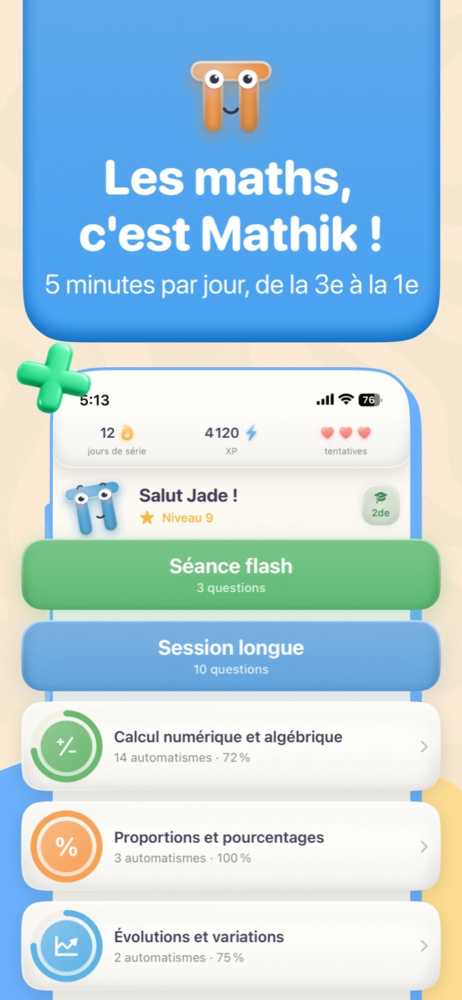
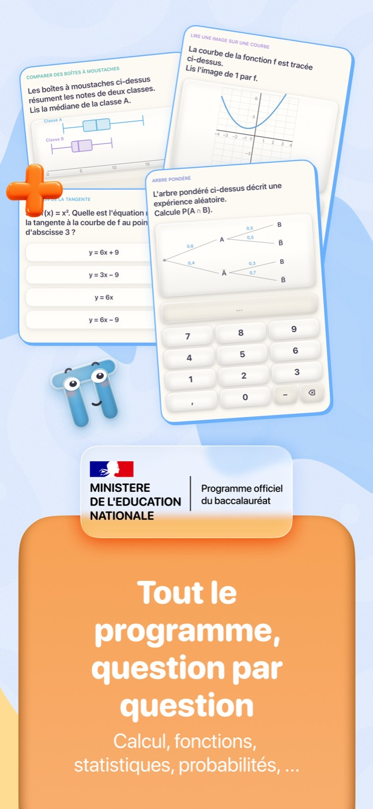
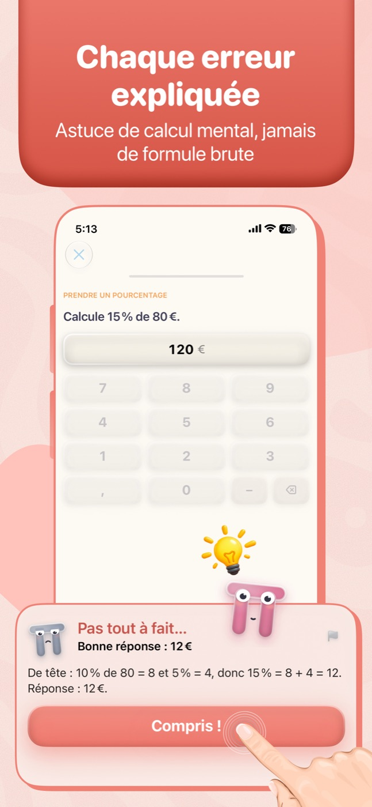

Les automatismes de maths du lycée, façon jeu. Quelques minutes par jour pour ancrer les réflexes de calcul.

screen1.jpg
screen2.jpg
screen3.jpgÀ propos
Mathik est une application native iPhone et iPad qui transforme la révision des automatismes de mathématiques du lycée en un jeu quotidien. Fidèle aux programmes officiels français (Seconde et Première), elle propose de courtes séances de calcul mental : chaque question se résout de tête, avec une correction qui explique toujours la méthode, jamais seulement le résultat. Un moteur de répétition espacée revient sur les notions au bon moment pour les ancrer durablement. Guidé par Mathik, la mascotte π, on progresse à son rythme — niveaux, séries et badges à la clé.
Fonctionnalités